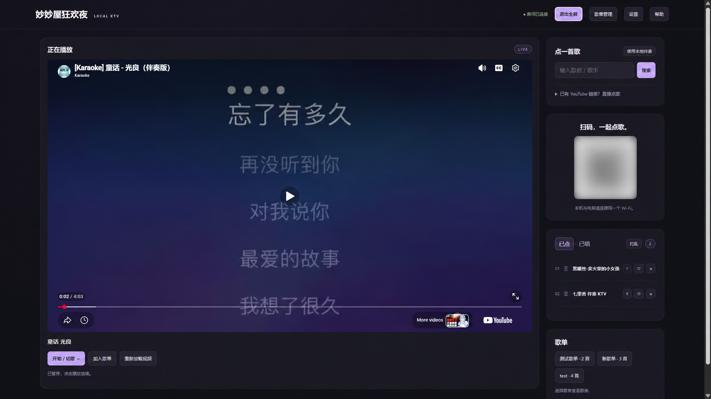

把客厅，
变成你的主场。
妙妙屋狂欢夜是一款支持 YouTube 与本地伴奏播放、手机扫码点歌、多人排队和自定义歌单的电脑 KTV 软件。
功能介绍

点歌
- 搜索：在“点一首歌”输入歌名或歌手，点击“搜索”。程序会在 YouTube 查找伴奏版本，选择合适的视频后点击“点歌”。搜索需要先在电脑端“设置”中填写自己的 YouTube API Key，搜索和点歌不会打断当前播放。
- YouTube 链接直接点：展开“已有 YouTube 链接？直接点歌”，粘贴视频链接后点击“点歌”。不填歌名时会尝试读取视频标题；此方式无需 API Key。
- 本地 MP3 或 MP4：在电脑端点击“使用本地伴奏”，选择文件即可加入已点队列。MP4 播放视频；MP3 显示歌曲名。程序直接读取原文件，不复制或上传文件。
- 手机点歌：手机与电脑连接同一局域网后，扫描电脑页面上的二维码。多人可分别搜索、点歌和调整队列，伴奏在电脑播放。电脑通过网线连接同一路由器也可以。
- 视频预览：搜索结果和歌单中的“预览”可静音查看视频，确认版本后点击“点歌”；预览窗口中的“点歌”会加入当前曲目并关闭预览。MP3 不提供视频预览。
重新排序歌曲
- 置顶：点击已点歌曲右侧的“↑”，将它移到队列最前面，作为下一首播放。
- 拖动：在“已点”列表中上下拖动歌曲以调整顺序。手机请按住歌曲左侧的拖动柄（⠿）拖动；队列每页显示五首，跨页置顶可使用“↑”。
- 乱序：点击“打乱”，随机重新排列已点歌曲。排序会同步到所有设备，不影响当前正在播放的歌曲。
创建歌单
- 新建与管理：电脑端右上角的“歌单管理”可创建空歌单、删除歌单，也可管理歌单内的歌曲。扫码手机不提供歌单管理。
- 收藏歌曲：在“已点”或“已唱”中点击“♡”，或在当前播放器下方点击“加入歌单”，再选择一个已有歌单即可保存。同一视频或本地文件路径在同一歌单内不会重复添加。
- 从歌单点歌：点击歌单名，在歌单区域展开歌曲列表，再点击“点歌”。歌单保存在当前电脑，重启后仍可使用；收藏的本地歌曲只记录原路径，请保留原文件，路径失效时会跳过该曲目。
播放与重唱
- 自动播放与切歌：没有歌曲正在播放时，新点的第一首会自动开始；一首结束后会继续播放队列中的下一首。也可点击“开始 / 切歌 →”手动切换。如果浏览器拦截自动播放，请先在电脑播放器中点击播放。
- 已唱与重唱：切换到“已唱”可以查看唱过的歌曲，再次点击“点歌”即可重新排队。已点队列和已唱记录会在程序服务退出后清空。
- 播放控制与全屏：使用播放器自带的按钮播放、暂停或全屏视频；右上角“全屏 / 退出全屏”控制整个网页的全屏显示。
下载与启动
- 适用于 Windows 10/11 64 位电脑（需 .NET Framework 4.8），以及运行 macOS 13.5 或更新版本的 Apple Silicon 和 Intel Mac。
- Mac 版暂不支持扫码加入 Wi-Fi，也不能通过应用旁的端口文件临时覆盖端口。扫码点歌仍可使用。
- 在 Mac 上打开「苹果菜单 → 关于本机」。若「芯片」显示 Apple M 系列，下载 Apple Silicon（ARM64）版。若「处理器」显示 Intel，下载 Intel（x64）版。
- Windows 双击运行 EXE。Mac 打开 DMG，把应用拖入「应用程序」后启动。启动后浏览器会自动打开。
- 当前软件为作者个人开发，有可能遇到无法打开或软件被拦截的情况。解决办法详见常见问题。
- 默认电脑地址：http://localhost:11449/
- 电脑需能访问 YouTube。如需使用搜索点歌功能，首次运行时需要设置YouTube API Key。详见 申请并设置 YouTube API Key（用于程序内搜索）。仅使用本地伴奏和直接提供YouTube链接点歌可跳过这一步。
- 手机扫码点歌时需要与电脑连接同一个Wifi。
下载最新版
下载其他版本
申请并设置 YouTube API Key
（用于程序内搜索）
- 登录 Google Cloud 控制台。点顶部的「选择项目（Select a project）」或当前项目名，再点「新建项目（New Project）」。填写「项目名称（Project name）」，点「创建（Create）」。创建完成后，在顶部项目选择器切换到这个项目。已有专用项目时，直接选择它。
- 打开「API 和服务（APIs & Services）」→「库（Library）」，搜索 YouTube Data API v3。打开同名结果后点「启用（Enable）」。若页面显示「管理（Manage）」，说明该项目已启用此 API。
- 回到「API 和服务（APIs & Services）」→「凭据（Credentials）」，点「创建凭据（Create credentials）」→「API 密钥（API key）」。在「创建 API 密钥（Create API key）」窗口填写「名称（Name）」，在「选择 API 限制条件（Select API restrictions）」中选中 YouTube Data API v3。「应用限制条件（Application restrictions）」保留「无（None）」，然后点「创建（Create）」。
- 创建成功后，在「已创建 API 密钥（API key created）」弹窗里点密钥旁的「复制（Copy）」图标。如果已经关闭弹窗，回到「凭据（Credentials）」页，在「API 密钥（API Keys）」列表中找到对应的密钥，点「显示密钥（Show key）」再复制。
- 首次启动程序时，在电脑页面的「设置（Settings）」中粘贴准备好的 YouTube API Key 并点击「保存（Save）」。下次启动会自动加载。之后需要更换时，在电脑页面右上角打开「设置（Settings）」，输入新密钥并保存。
* 不要把自己的密钥或配置文件上传到公共下载文件夹。
常见问题
- 软件默认运行在11449端口。如需临时更换软件运行端口或端口已占用，可退出程序，在 EXE 所在文件夹中创建 UTF-8 文本文件 mmwktv-port.txt，仅填入 1–65535 的可用端口号，保存后重新启动。
- Windows启动时，当软件被 Smart App Control 阻拦时：确认软件来源可信后，可尝试在 Windows 安全中心设置中关闭（disable）Smart App Control。关闭会降低对其他不受信任应用的防护，并非只允许本软件运行；请先阅读微软官方说明，再自行决定。
- Mac 启动时，如果系统提示无法验证开发者，先确认安装包来源可信。尝试打开应用后，进入「系统设置（System Settings）」→「隐私与安全性（Privacy & Security）」，向下滚动到页面底部的「安全性（Security）」区域，点击「仍要打开（Open Anyway）」，按提示验证身份并确认打开。该按钮通常在尝试打开应用后约一小时内可用。参见 Apple 官方说明。
- 如有更多问题请在 ContactMe 中记录，作者会不定期查看、回复和更新~
作者简介
Release Note
正式版
- 1.0.4
- 二维码加入WiFi
- 更新说明和帮助页面
- Minor UI bug fixes
- 1.0.1
- 优化了UI界面
- 1.0.0
- 加入帮助页面
- 加入port override功能以防止端口占用
- Minor bug fixes 和 UI优化
测试版
- 0.1.0
- 配置和数据文件现在存在APP data文件夹，而不是新建文件
- 支持使用本地MP3或MP4伴奏
- 支持歌单管理移除歌曲
- 0.0.2
- 全局全屏
- 空列表点歌时自动播放
- 已唱列表和重唱
- 预载歌单、新建歌单
- Bug fixes 和 UI 优化
- 0.0.1
- 本地KTV运行
- Youtube search - by api key directly
- 手机扫码点歌台
- 已点队列、重新排序、置顶、删除
- 歌曲屏幕全屏
- 重新加载视频
- Youtube视频链接直接加入队列
- 设置页面